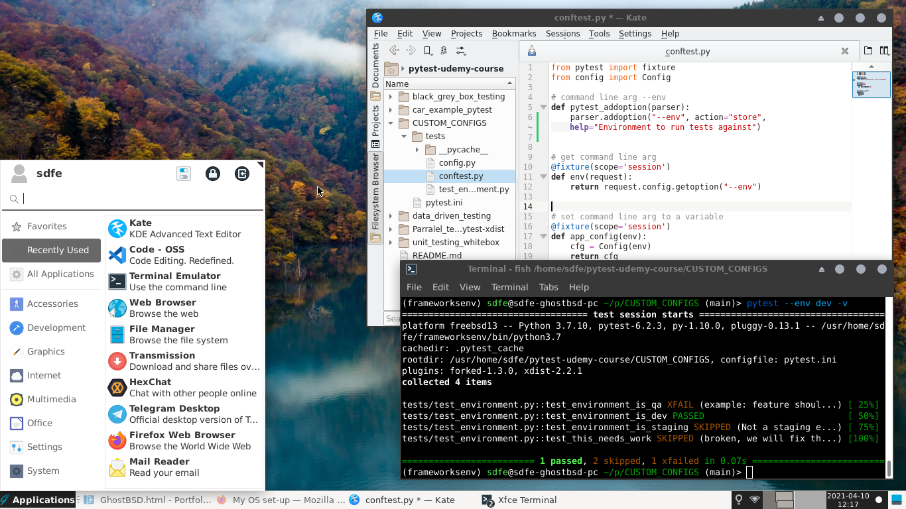

GhostBSD - User friendly fork of FreeBSD
Screenshot of my current dev and personal use OS, GhostBSD - xfce.
Reasons for choosing GhostBSD as a desktop OS:
BSD - Unix philosophy, lighter kernel.
User-friendly, comes with desktop environment and is easy to install,
Based on FreeBSD, support for many applications